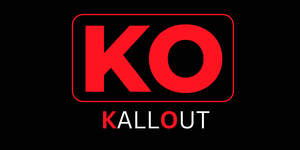

Trade Mark Journal No.2025/050 12 December 2025
UK00004303731 1 December 2025 (9,35,38,41,42)

- Class 9
- Collaboration management software platforms; Devices for streaming media content over local wireless networks; Computer software platforms for social networking; Network management software; Mobile apps; Software for mobile phones; Mobile software; Computer software; Computer gaming software; Software for computers; Computer software applications; Downloadable computer software; Computer game software for use on mobile devices; Computer game software for use on mobile and cellular phones; Computer software for mobile phones; Electronic game software for mobile phones; Downloadable computer game software via a global computer network and wireless devices; Computer application software for mobile phones; Computer application software for mobile telephones; Application software for mobile phones; Application software for mobile devices; Downloadable software applications for mobile phones; Downloadable applications for use with mobile devices; AI software; Software; Computer software platforms; Computer software for use as an application programming interface (API); Downloadable computer software for use as an application programming interface (API); Computer application software for TV; Computer application software; Downloadable computer software for use as an electronic wallet; Interactive computer software; Computer e-commerce software; Media streaming software; Media software; Digital media streaming devices; Media server software; Media and publishing software; Computer software for the display of digital media; Multimedia software; Video streaming devices; Computer application software for streaming audio-visual media content via the internet.
- Class 35
- Marketing services relating to esports events; Advertising services relating to esports events; Promotion services relating to esports events; Promotion of goods and services through sponsorship of sports events; Promotion of sports competitions and events; Promotion of goods and services through sponsorship of international sports events; Promotion of special events; Promotion of goods through influencers; Promotion of goods and services through sponsorship; Promoting the sale of goods and services of others through promotional events; Influencer marketing; Marketing; Advertising and marketing; Affiliate marketing; Product marketing; Promotional marketing; Referral marketing; Marketing consultancy; Digital marketing; Advertising and marketing services; Advertising, marketing and promotion services; Marketing, advertising and promotion services; Advertising and marketing services provided by means of social media; Development of promotional campaigns; Developing promotional campaigns for businesses; Brand creation services (advertising and promotion); Advertising and promotion services; Search engine optimisation for sales promotion; Online advertising network matching services for connecting advertisers to websites; Online advertising services; Data entry and data processing; Online data processing services; Data processing; Data collection services; Compilation of advertisements for use on the internet; Online advertising via a computer communications network; On-line advertising via a computer communications network; Promoting services for baseball game; Online community management services; Advertising via electronic media and specifically the internet; Arranging and conducting of marketing events.
- Class 38
- Streaming audio and video material on the Internet; Audio and video broadcasting services provided via the Internet; Streaming of esports events; Broadcasting of esports events; Video, audio and television streaming services; Data streaming services; Streaming of audio, visual and audiovisual material via a global computer network; Distribution of data or audio visual images via a global computer network or the internet; Provision of telecommunication access to video and audio content provided via an online video-on-demand service; Video broadcasting; Broadcasting of video and audio programming over the Internet; Broadcasting; Broadcasting and transmission of pay-per-view television programs; Subscription television broadcasting.
- Class 41
- Organising of esports competitions; Organising competitions; Organisation of e-sports competitions; Competitions (Organising of sports -); Organising of sports competitions; Organising of esports activities; Organising of racing competitions; Organising of games and competitions; Organising of entertainment competitions; Organising of competitions for entertainment; Competitions (Organising of entertainment -); Organising of sports competitions and events; Organization of esports competitions; Competitions (Organising of education -); Organising of education competitions; Organising of competitions for education; Organising of sporting activities and competitions; Organising of sporting activities or competitions; Organising of sporting events, competitions and sporting tournaments; Organising of sports competitions and sports events; Organising of sports events and of sports competitions; Arranging and conducting e-sports competitions; Dancing competitions (Organising of -); Organising of dancing competitions; Organisation of sports competitions; Organisation of competitions; Organisation of games and competitions; Organisation of esports events; Organisation of sporting competitions; Organising of sporting contests; Organisation of sporting events and competitions; Organisation of football competitions; Arranging of sports competitions; Organising of basketball tournaments; Organisation of entertainment competitions; Organising of sporting activities and of sporting competitions; Organisation of sporting competitions and sports events; Organising of sports events; Sporting competitions (Arranging of -); Arranging of athletics competitions; Organising of football events; Organisation of conferences, exhibitions and competitions; Organisation of yachting competitions; Organizing and conducting college sport competitions; Organisation of sporting activities and competitions; Entertainment in the nature of esports competitions; Organisation of golf competitions; Organisation of professional golf tournaments or competitions; Organisation of competitions and awards; Organisation of quizzes, games and competitions; Organisation of dancing competitions; Organisation of sports tournaments; Organisation of recreational competitions; Organisation of ice-skating competitions; Organization of sporting events and competitions; Organising of sporting events; Organising sporting events; Organising gymnastics events; Gymnastics events (Organising of -); Conducting of sports competitions; Organising community sporting events; Organising of golfing tournaments; Arranging and conducting of sports competitions; Competitions (Organization of sports -); Organization of sports competitions; Organisation of musical competitions; Organization, arranging and conducting of sports competitions; Organising and holding speed skating championships and competitions; Golf tournaments (Organising of -); Organising of golf tournaments; Organisation of artistic competitions; Organising of sports and sports events; Organisation of roller-skating competitions; Services for the organisation of competitions; Organisation of tournaments; Arranging competitions and tournaments relating to driving; Organising and holding figure skating championships and competitions; Organising and conducting fishing tournaments; Arranging competitions and tournaments relating to car racing; Organization of competitions; Organization, arranging and conducting of professional golf tournaments or competitions; Organising of recreational events; Organising of festivals; Organisation of beauty competitions; Organisation of competitions [education or entertainment]; Organisation of competitions (education or entertainment); Competitions (organisation of -) [education or entertainment]; Organisation of competitions for education or entertainment; Hosting [organising] awards; Organization of entertainment competitions; Organising of competitions [entertainment] by telephone; Organization of soccer competitions; Ice-skating events (Organising of -); Organising dancing events; Organization of sport fishing competitions; Organisation of equestrian contests; Organising of entertainment; Organisation of chess tournaments; Production of esports events; Diving exhibitions (Organising of -); Arrangement of sports competitions; Organisation of wrestling contests; Providing facilities for sporting events, sports and athletic competitions and awards programmes; Organisation of recreational tournaments; Organization of electronic sports competitions; Organization, arranging and conducting of sumo wrestling competitions; Arranging of competitions for education or entertainment; Conducting of live esports events; Beauty contests (Organising of -); Organising of beauty contests; Organising of education exhibitions; Tournaments (Staging of sports -); Administration [organisation] of competitions; Organising of educational games; Provision of sporting competitions; Organisation of dog competitions; Organising of educational exhibitions; Consultancy relating to the organisation of culinary competitions; Arranging and conducting athletic competitions; Organization of sporting events and competitions, involving animals; Hosting [organising] awards relating to videos; Organisation of competitions [education and/or entertainment]; Organising of educational conferences; Organising of motor racing events; Organising community cultural events; Organisation of sporting events; Arranging and conducting of competitions [education or entertainment]; Organisation of tennis tournaments; Organising of education conventions; Organising of galas; Organization of education competitions; Organising of education conferences; Hosting [organising] awards relating to television; Organising of audience participative games; Arranging and conducting competitions; Organisation of speed skating competitions; Hosting [organising] awards relating to films; Organising events for entertainment purposes; Conducting of phone-in competitions; Organising figure and speed skating competitions; Esports coaching; Organising of exhibitions for entertainment purposes; Ticket information services for esports events; Ticket information services for entertainment events; Ticket information services for sporting events; Ticket reservation and booking services for esports events; Ticket procurement services for entertainment events; Ticket information services for shows; Ticket procurement services for sporting events; Providing will-call ticket services for entertainment, sporting and cultural events; Ticket reservation and booking services for education, entertainment and sports activities and events; Ticket reservation and booking services for entertainment events; Ticket reservation and booking services for sporting events; Entertainment information services; Ticketing and event booking services; Entertainment services relating to esports; Services for the organisation of sports events; Ticket reservation and booking services for cultural events; Entertainment services relating to sporting events; Ticket reservation and booking services for recreational and leisure events; Booking of sports personalities for events (services of a promoter); Entertainment services in the nature of sporting events; Providing online entertainment in the nature of game tournaments; Providing online entertainment in the nature of game shows; Providing online entertainment in the nature of fantasy sports leagues; Providing online games; Entertainment services in the nature of video games; Entertainment in the nature of soccer games; Entertainment in the nature of basketball games; Entertainment in the nature of football games; Entertainment in the nature of golf tournaments; Provision of online information in the field of computer games entertainment; Providing online video games; Entertainment in the nature of hockey games; Entertainment in the nature of ongoing game shows; Entertainment services, namely, providing on-line computer games; Entertainment in the nature of baseball games; Entertainment in the nature of tennis tournaments; Video game entertainment services; Providing on-line video games; Providing on-line information in the field of computer gaming entertainment; Providing online newsletters in the fields of sports entertainment; Providing on-line interactive computer games; Gaming services; Online gaming services; On-line gaming services; Gaming machine entertainment services; Gaming services for entertainment purposes; Casino, gaming and gambling services; Gambling services; E-sports services; Entertainment services; Casino services; Online entertainment services; Wagering services; Administration [organisation] of gaming services; Entertainment services sharing computer games; Online gambling services; Entertainment services for matching users with computer games; Game services; Electronic games services; Entertainment services, namely, provision of a virtual reality or metaverse based simulation gaming service; Video entertainment services; Amusement arcade gaming machine rental services; On-line gambling services; Recreation services; Sports entertainment services; Betting services; Education, entertainment and sport services; Interactive entertainment services; Sports education services; Entertainment agency services; Entertainment services provided by on-line streams; Audio and video recording services; Audio and video editing services; Entertainment services for sharing audio and video recordings; Services for the production of entertainment in the form of video; Presentation of live entertainment events; Entertainment services in the nature of arranging social entertainment events; Virtual reality game services provided on-line from a computer network; Organization of sporting events; Sporting competitions (Organising of -); Organisation of events for cultural, entertainment and sporting purposes; Services for the organisation of football events; Organisation of cultural events; Organisation of entertainment events; Organisation of cycling events; Advisory services relating to the organisation of sporting events; Provision of sporting events; Organisation of educational events; Organisation of entertainment and cultural events; Organisation of automobile racing events; Sporting activities; Production of sporting events; Sports competitions (Organising of -); Organizing community sporting and cultural events; Organisation of vehicle racing events; Arranging of sporting events; Organisation of musical events; Sporting and cultural activities; Cultural and sporting activities.
- Class 42
- Software as a service [SaaS] featuring software platforms for electronic gaming; Software as a service [SaaS] featuring software for machine learning; Providing online, non-downloadable software; Providing temporary use of online, non-downloadable computer software for use in broadcast monitoring applications; Providing temporary use of non-downloadable interactive entertainment software; Software as a service [SaaS] featuring software for deep neural networks; Advisory services relating to computer software used for publishing; Consultancy and information services relating to the design, programming and maintenance of computer software; Platform as a service [PaaS] featuring software platforms for transmission of images, audio-visual content, video content and messages.
SQUADIFI LTD